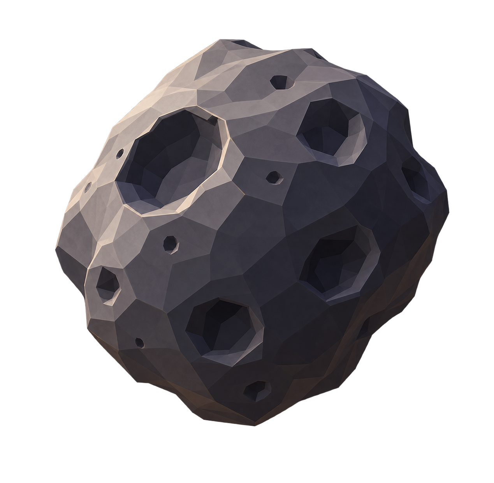

🎯 投資
💬 会話

—
Asla語
Ranoa語
Miris語
隕石まで
?
年
投資・建設 — 実線
自国施設
他国施設
破壊
会話 — 点線・色は使った言語
母語
習得した外国語
AI翻訳
その他の行動
📖
学習
🔭
観測
🗳
投票
📝
メモ
🏦
国庫
🌿
寿命
✕
失敗
死亡・継承
⏮
▶
⏭
年
1
とてもゆっくり
かなりゆっくり
ゆっくり
普通
速い
とても速い
📁
実行フォルダを選ぶか、URLに
?run=フォルダ名
📁 実行フォルダを選択
✕
✕ 閉じる